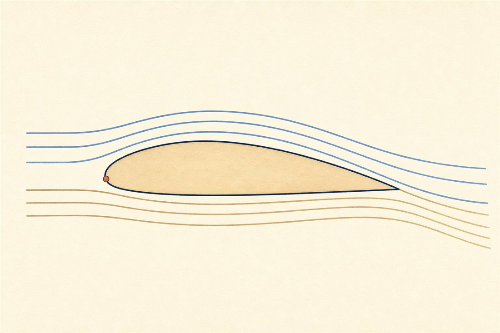
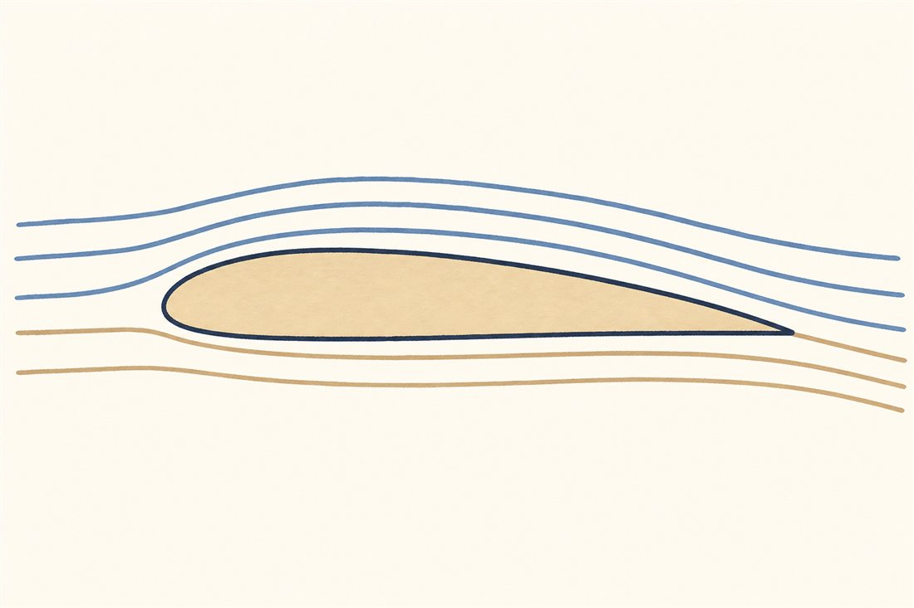
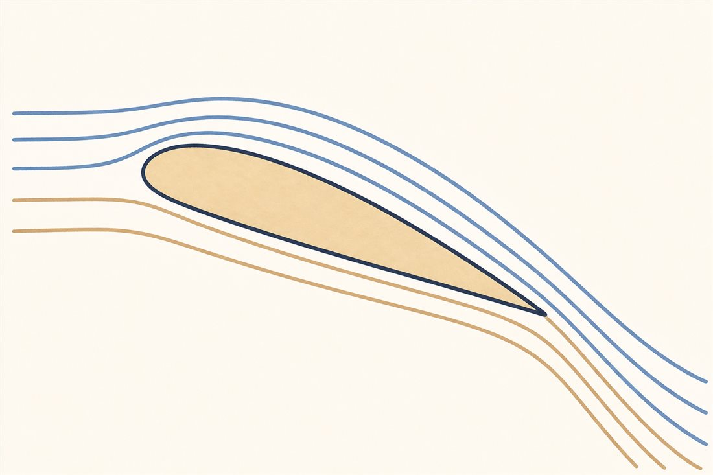
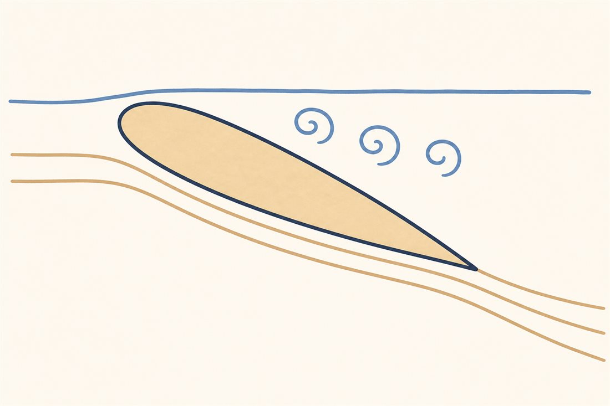

ひこうきは、空気をまげて とんでいく
第2巻は、空のエンジンとつばさの話です。まずはいちばん大きな不思議から——目方250トンの金属のかたまりが、なぜ空に浮かんでいられるのか。答えはたった一言、つばさは、通りすぎる空気を下に曲げている。曲げられた空気は下向きの勢いを受け取り、そのお返し（反作用）が機体を持ち上げます。じつは第1巻第2話「うしろに投げると、まえにすすむ」とまったく同じ物理で、投げる向きが「うしろ」から「した」に変わっただけなのです。
ところで、有名な説明を聞いたことがあるはずです——「翼の上面はふくらんでいて道のりが長い。同じ時刻に後縁へ着くためには上の空気が速く流れる必要がある。速いと圧力が下がるから浮く」。この説明、太字の部分がまちがいです。実験で流れに煙を入れて見ると、上面の空気は「同時」どころか下面より先に後縁へ着いてしまいます。実際の流れがどうなっているのか、絵で見ましょう。

まとめると、ふつうに飛んでいるとき、翼は「下から押される」より「上から吸われる」乗り物です。たいていの翼・たいていの飛び方では、上面の低圧の吸い上げのほうが下面の高圧の押し上げより大きく効きます。湿った日の離着陸で翼の上面にだけ白い雲がふっと湧くことがあるのは、この低圧が空気を冷やしている証拠——ページの終わりの「ほんものの一枚」で実物をお見せします。
では、もっと持ち上げたいときはどうするか。手は2つ——速く飛ぶか、迎え角（流れに対する翼の傾き）を深くするかです。切り替えて見てください。深くしすぎたときに何が起きるかも。



よりみち揚力を、1本の式で
密度ρ、速さv、翼面積S、そして翼のがんばり度CL。速さが2乗で効くのは、速く飛ぶほど「単位時間に出会う空気の量」も「その空気に与える下向きの速度変化」も速さに比例して増える——量×変化の掛け算だからです。数字にすると、787-9は最大離陸重量約254トン（従来公称値）・翼面積377m²。翼1m²あたり約670kg、畳1枚ほどの面積で軽自動車1台ぶんを支える勘定です。離陸の速さはジェット旅客機でおおむね時速240〜285km（機体・重さ・フラップ設定で変わります）——滑走路の上でこの式の左辺が機体の重さを追い越した瞬間が、浮揚です。ちなみに巡航中のCLはざっくり0.4〜0.6——速さがほとんどの仕事をしてくれるので、翼の傾けはわずかで足ります。
よりみち「同時に着く」は、どこでまちがえたか
等時間通過説がもっともらしく聞こえるのは、前縁で別れた空気が後縁で「再会する」絵を描いてしまうから。でも再会する義理はどこにもありません。煙で可視化すると上面の空気は先に着きます（Babinsky 2003、NASA Glennの解説）。では上面が速くなる本当の理由は——翼が流れに角度をもって置かれたとき、後縁から流れが滑らかに離れられる流れ方はひとつしかない（クッタ条件）。その条件を満たすように翼のまわりに「回る成分」（循環）がひとつ選ばれ、結果として上面は速く、下面は遅くなります。「速いから低圧」（ベルヌーイ）も「下に曲げた反作用」（ニュートン）も、同じ流れ場を別の帳簿で会計しているだけで、どちらも正しい答えを出します。
 流体屋のためのノート
流体屋のためのノート
2次元翼の揚力はクッタ・ジューコフスキーの定理に集約され、循環Γはクッタ条件が選びます（定常・付着流・高Reの極限での話。始動時には始動渦と対になって動的に決まり、失速後の流れでは条件自体が意味を失います）。非粘性のポテンシャル流では任意のΓで解が作れてしまうのに、「後縁で速度が有限」という一点が粘性の記憶として解を一意に決める——揚力理論のいちばん美しい場所です。世に言う「ベルヌーイ派vsニュートン派」論争は、検査体積の取り方が違う会計の差にすぎず、翼面の圧力積分でも遠方の運動量欠損でも同じLが出ます（丁寧な整理はMcLean）。実務の落とし穴もここにあって、CFDの後処理で近傍の圧力項と遠方の運動量項を混ぜて数えると、揚力を二重計上したり取りこぼしたりします。次話は3次元へ——翼が有限の長さになった瞬間、翼端に渦が立ち、「揚力の代金」としての誘導抗力が現れます。渦度の保存則が翼の後ろに書く請求書、の話です。

{kind=link}
・J. D. Anderson, Fundamentals of Aerodynamics, 6th ed., ch.1・3・4
・NASA Glenn Research Center, "Incorrect Lift Theory"（等時間通過説の反証・パブリックドメイン）
・H. Babinsky, "How do wings work?", Physics Education 38(5), 2003
・787-9の数値（MTOW 254t・翼面積377m²）: Boeing公表値／Wikipedia "Boeing 787 Dreamliner"